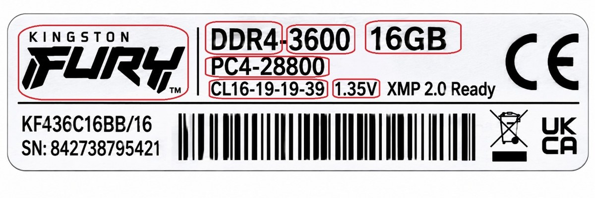

Inicio / Montaje y mantenimiento de sistemas y componentes informáticos / Tema 3
Recurso · ActividadesActividades: la memoria del ordenador
Actividades para repasar los apuntes del tema. Las preguntas, ejercicios y problemas tienen la solución en un desplegable justo debajo: inténtalo antes de abrirlo. Al final están las actividades para investigar y para el taller.
Preguntas cortas
- Ordena de más rápida a más lenta: SSD NVMe, caché L1, disco duro, RAM, caché L3.
Ver solución
Caché L1, caché L3, RAM, SSD NVMe, disco duro.
- Calcula el ancho de banda (en MB/s) de una DDR4-2666 y de una DDR5-4800. ¿Qué nombre comercial PC4-... y PC5-... tendrán?
Ver solución
- DDR4-2666: 2.666 × 8 = 21.328 MB/s. Se vende como PC4-21300.
- DDR5-4800: 4.800 × 8 = 38.400 MB/s. Se vende como PC5-38400.
- Un SSD de 512 GB aparece en Windows con unos 476 GB. ¿Está roto? Explica por qué.
Ver solución
No está roto: 512 GB contados de 1.000 en 1.000 son unos 476 GB contados de 1.024 en 1.024.
- ¿Qué es mejor para un equipo de oficina, 1 módulo de 16 GB o 2 módulos de 8 GB? Justifícalo.
Ver solución
Es mejor la opción de 2 módulos de 8 GB, por el doble canal (dual channel): con dos módulos iguales en las ranuras correctas, el procesador accede a los dos a la vez y casi se duplica el ancho de banda. Con un solo módulo de 16 GB la memoria trabaja en un solo canal.
- Una placa base tiene estas características: 2 ranuras DDR5 DIMM, máximo 96 GB, dual channel, 4800-6400 MT/s. ¿Se podría instalar el kit del ejemplo del apartado 4 de los apuntes (2 × 16 GB DDR5-6000)? ¿Y un módulo DDR4-3200 de 16 GB? ¿Por qué?
Ver solución
- El kit DDR5-6000 sí, porque es DDR5, cabe en las 2 ranuras, 32 GB es menos del máximo y 6000 está dentro del rango.
- El módulo DDR4 no, porque es otra generación y no encaja.
- Nombra 3 programas de diagnóstico de memoria.
Ver solución
El Diagnóstico de memoria de Windows (mdsched), MemTest86 (o su versión libre, Memtest86+) y otros como TestMem5 u OCCT. Ojo: CPU-Z muestra los datos de la memoria, pero no la comprueba.
- ¿Qué es la latencia?
Ver solución
Es el tiempo de espera desde que el procesador pide un dato hasta que empieza a recibirlo. En la RAM se mide en ciclos de reloj (CL) o en nanosegundos. Cuanto más baja, mejor.
- Las tarjetas gráficas tienen su propia RAM. ¿Qué ocurre en el caso de las tarjetas gráficas integradas en la placa base?
Ver solución
No tienen memoria propia: usan una parte de la RAM del sistema (memoria compartida). Esa parte queda reservada para la gráfica y los programas ya no la pueden usar.
- Describe 2 formas de abrir el Administrador de tareas.
Ver solución
Con Ctrl + Mayús + Esc; con Ctrl + Alt + Supr y eligiendo «Administrador de tareas»; con clic derecho en la barra de tareas (o en el botón Inicio) y «Administrador de tareas»; o escribiendo taskmgr en Ejecutar (Windows + R).
- ¿Se puede ampliar la memoria RAM en un portátil con 16 GB de RAM soldada a la placa? Explica tu respuesta.
Ver solución
La memoria soldada no se puede cambiar ni ampliar. Solo se podría ampliar si, además de la memoria soldada, el portátil tiene una ranura SO-DIMM libre (algunos modelos la tienen). Hay que mirarlo en el manual antes de comprar memoria.
- SRAM y DRAM: ¿dónde se usa cada una?
Ver solución
La SRAM se usa en la memoria caché del procesador. La DRAM se usa como memoria principal (los módulos de RAM DDR4 y DDR5).
- En cuanto a su funcionamiento, ¿cuál es la principal diferencia entre la SRAM y la DRAM?
Ver solución
La DRAM necesita «refrescarse» (recargarse) miles de veces por segundo para no perder los datos. La SRAM no necesita refresco mientras tenga corriente. Por eso la SRAM es más rápida, pero también más cara y ocupa más.
- Nombra 3 formatos de módulos de memoria (DDR no es un formato).
Ver solución
DIMM (sobremesa), SO-DIMM (portátiles y miniPC) y CAMM2 (portátiles nuevos). Formatos antiguos: SIMM, FB-DIMM y Micro-DIMM.
- Almacenamiento no volátil de datos: dime 3 tipos.
Ver solución
Por ejemplo: disco duro (HDD), SSD (SATA o NVMe), pendrive USB y tarjetas SD, CD/DVD. También la memoria flash donde está la BIOS/UEFI.
- ¿Qué almacena la memoria caché?
Ver solución
Una copia de los datos e instrucciones que el procesador va a usar enseguida (o que acaba de usar), para no tener que ir a buscarlos a la RAM, que es más lenta.
- ¿Y los registros?
Ver solución
El dato o la instrucción con la que la CPU está operando en ese instante. Están dentro del procesador y son la memoria más rápida y más pequeña (unos pocos bytes cada uno).
- El voltaje influye en la velocidad de la memoria y del procesador. Esto puede ocurrir de dos maneras: explica cada una de ellas.
Ver solución
1. Subiendo el voltaje para ir más rápido (overclocking). Para que una memoria o un procesador funcione a más frecuencia de la que trae de serie, suele hacer falta darle algo más de voltaje para que siga estable. Por ejemplo, una DDR4-3600 con el perfil XMP activado funciona a 1,35 V en lugar de los 1,2 V normales. A cambio, gasta más energía y se calienta más.
2. Gracias a componentes más pequeños, que necesitan menos voltaje. En cada generación los transistores son más pequeños. Eso les permite trabajar más rápido y, a la vez, con menos voltaje. Por eso cada generación de RAM es más rápida y gasta menos: DDR3 a 1,5 V, DDR4 a 1,2 V y DDR5 a 1,1 V. Ojo: no es que bajar el voltaje haga ir más rápido. Lo que ocurre es que los componentes más pequeños permiten las dos cosas, y al calentarse menos se puede subir más la frecuencia.
Ordenar y completar
- Ordena de mayor a menor velocidad (1 = la más rápida, 6 = la más lenta) e indica si cada memoria es volátil: RAM, SSD, registros, caché L2, CD/DVD y HDD.
Ver solución
| Posición | Nombre | ¿Es volátil? |
|---|---|---|
| 1 | Registros | Sí |
| 2 | Caché L2 | Sí |
| 3 | RAM | Sí |
| 4 | SSD | No |
| 5 | HDD | No |
| 6 | CD/DVD | No |
- Ordena de mayor a menor según su uso de RAM (1 = el que más usa): Windows, navegador con 5 pestañas, Bloc de notas, juego de última generación (CoD, Apex, Cyberpunk...) y servidor de Fortnite en un evento mundial.
Ver solución
- Servidor de Fortnite en un evento mundial: cientos de GB, o incluso varios TB repartidos entre muchos servidores.
- Juego de última generación: entre 8 y 16 GB (por eso se recomiendan 32 GB para jugar).
- Windows: unos 2-4 GB solo para el sistema.
- Navegador con 5 pestañas: entre 0,5 y 1,5 GB, según las páginas.
- Bloc de notas: unos pocos MB.
Son cifras orientativas: dependen del programa, de la versión y de la RAM que tenga el equipo.
- Completa el glosario de términos: standoff, HDD, SSD, motherboard (MB), power supply (P.S.), LGA, RAM, ROM, SRAM y DRAM.
Ver solución
| Término | Significado |
|---|---|
| Standoff | Separador: pieza que sujeta la placa base a la caja y la mantiene separada del metal |
| HDD | Hard Disk Drive: disco duro |
| SSD | Solid State Drive: unidad de estado sólido (memoria flash) |
| Motherboard (MB) | Placa base |
| Power supply (P.S.) | Fuente de alimentación |
| LGA | Land Grid Array: socket con los pines en la placa base |
| RAM | Random Access Memory: memoria de acceso aleatorio |
| ROM | Read Only Memory: memoria de solo lectura |
| SRAM | Static RAM: RAM estática (caché) |
| DRAM | Dynamic RAM: RAM dinámica (memoria principal) |
- Ordena DDR5, DDR3 y DDR4 según su velocidad (1 = la más rápida) y según su voltaje (1 = la de más voltaje).
Ver solución
| Nombre | Velocidad | Voltaje |
|---|---|---|
| DDR5 | 1 | 3 (1,1 V) |
| DDR4 | 2 | 2 (1,2 V) |
| DDR3 | 3 | 1 (1,5 V) |
Problemas
Recuerda. Los fabricantes cuentan de 1.000 en 1.000 y Windows de 1.024 en 1.024. Para pasar de lo anunciado a lo que muestra Windows: GB en Windows = bytes ÷ (1.024 × 1.024 × 1.024).
Problema 1
Un disco duro se vende como de 3 TB. ¿Cuántos GB mostrará Windows? ¿Y cuántos TB?
Ver solución del problema 1
3 TB = 3.000.000.000.000 bytes
3.000.000.000.000 ÷ 1.073.741.824 = 2.794 GB aprox.
2.794 GB ÷ 1.024 = 2,73 TB
Problema 2
Tienes un SSD de 512 GB y un HDD de 2 TB. Calcula cuántos GB «faltan» en cada uno al verlos en Windows y qué porcentaje supone sobre lo anunciado.
Ver solución del problema 2
- SSD: 512.000.000.000 ÷ 1.073.741.824 = 476,8 GB. Faltan 512 − 476,8 = 35,2 GB, un 6,9 % (35,2 ÷ 512 × 100).
- HDD: 2.000.000.000.000 ÷ 1.073.741.824 = 1.862,6 GB. Faltan 2.000 − 1.862,6 = 137,4 GB, también un 6,9 %.
El porcentaje es el mismo porque no se pierde nada: es la diferencia entre contar de 1.000 en 1.000 y de 1.024 en 1.024.
Problema 3
Tienes que hacer una copia de seguridad de 1.850 GB (medidos en Windows) y solo tienes disponible un disco duro comercial de 2 TB. Un compañero te dice que no lo intentes porque «los discos siempre pierden un 10 % de capacidad y se quedará en 1.800 GB». ¿Tiene razón o cabe la copia? Demuéstralo.
Ver solución del problema 3
No tiene razón. Un disco de 2 TB aparece en Windows con 2.000.000.000.000 ÷ 1.073.741.824 = 1.862,6 GB. La diferencia es de un 6,9 %, no de un 10 %.
Como 1.862,6 GB es más que 1.850 GB, la copia cabe, aunque muy justa: sobran unos 12 GB.
Problema 4
Comparamos dos equipos con IPC 5 (instrucciones por ciclo). El portátil tiene 8 núcleos a 2,5 GHz y el de sobremesa, 4 núcleos a 4 GHz.
a) ¿Cuál hace más instrucciones por segundo usando todos los núcleos?
b) ¿Y con un programa que solo usa 1 núcleo?
Ver solución del problema 4
Instrucciones por segundo = núcleos × frecuencia (GHz) × IPC (en miles de millones)
a) Portátil: 8 × 2,5 × 5 = 100.000 millones/s. Sobremesa: 4 × 4 × 5 = 80.000 millones/s. Gana el portátil.
b) Portátil: 1 × 2,5 × 5 = 12.500 millones/s. Sobremesa: 1 × 4 × 5 = 20.000 millones/s. Gana el sobremesa.
Problema 5
Un programa de edición de vídeo necesita 1.300.000 millones de instrucciones. Se ejecuta en un procesador de 3 GHz con 8 núcleos e IPC 5.
a) ¿Cuánto tarda?
b) Si quisiéramos que tardara la mitad con el mismo número de núcleos e IPC, ¿a qué frecuencia tendría que ir?
c) ¿Y cuántos núcleos harían falta manteniendo los 3 GHz?
Ver solución del problema 5
Instrucciones por segundo = 8 × 3 × 5 = 120.000 millones/s
a) 1.300.000 millones ÷ 120.000 millones/s = 10,8 segundos aprox.
b) Para tardar la mitad hay que hacer el doble de instrucciones por segundo: 6 GHz.
c) O bien el doble de núcleos: 16 núcleos.
La etiqueta de una memoria
Fíjate en esta etiqueta de un módulo de memoria:

- Explica el significado de los datos marcados en rojo: Kingston Fury, DDR4, 3600, 16GB, CL16 y 1.35V.
Ver solución
| Dato | Significado |
|---|---|
| Kingston Fury | Fabricante (Kingston) y gama del producto (Fury, pensada para juegos y alto rendimiento) |
| DDR4 | Generación de la memoria. Solo sirve en placas con ranuras DDR4 |
| 3600 | Velocidad: 3.600 MT/s (con el perfil XMP activado) |
| 16GB | Capacidad del módulo |
| CL16 | Latencia CAS: 16 ciclos de espera desde que se pide un dato hasta que sale. Es el primero de los cuatro tiempos (16-19-19-39 = CL-tRCD-tRP-tRAS). En nanosegundos: 16 × 2.000 ÷ 3.600 = 8,9 ns |
| 1.35V | Voltaje con el perfil XMP activado. Sin él, una DDR4 funciona a 1,2 V |
- PC4-28800 es el ancho de banda teórico (capacidad máxima de transferencia), donde PC4 indica que es una memoria DDR4. Teniendo en cuenta los datos de la etiqueta, ¿de dónde sale esta cifra?
Ver solución
PC4-28800: se multiplica la velocidad por 8, porque el bus de memoria es de 64 bits (8 bytes): 3.600 × 8 = 28.800 MB/s.
Para investigar
- Busca en una tienda online un kit de memoria DDR5 y otro DDR4 de 16 GB. Anota su ficha (formato, velocidad, CL, voltaje) y su precio. ¿Cuánto cuesta cada GB?
- Busca el manual de una placa base actual y responde: ¿qué tipo de memoria admite?, ¿cuántas ranuras tiene?, ¿cuánta memoria máxima?, ¿en qué ranuras se colocan dos módulos para el doble canal?
Práctica en el taller
- Con los módulos del aula, identifica cada uno: formato (DIMM o SO-DIMM), generación (fíjate en la muesca y en la etiqueta), capacidad y velocidad. Rellena una tabla con los datos.
- Siguiendo las normas de seguridad, retira e instala la memoria de un equipo del aula. Después comprueba en la BIOS/UEFI y en el Administrador de tareas que se detecta toda la memoria.
- Ejecuta el Diagnóstico de memoria de Windows (
mdsched) y anota el resultado en una ficha de incidencias.